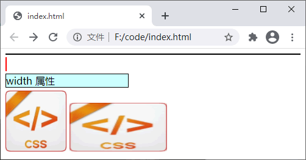
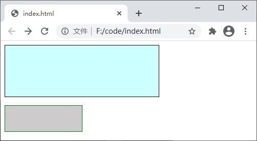
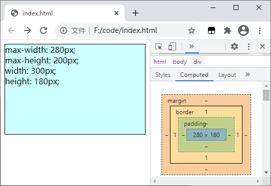
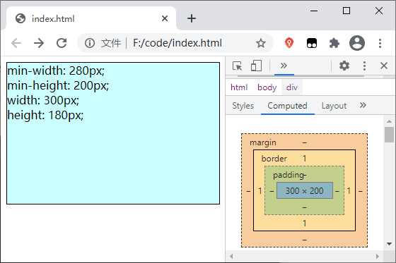

CSS width和height（宽度和高度）
CSS 尺寸属性指的就是元素的宽度和高度属性，虽然说非常简单，但却是必须掌握的技能。CSS 中提供了 width、height、max-width、min-width、max-height 和 min-height 等几个属性来设置元素的宽度和高度，这些元素使用起来非常简单，下面我们就来简单介绍一下。
【示例】使用 width 属性设置元素的宽度：
【示例】使用 width 和 height 属性设置元素的宽度和高度：
以 max-width 属性为例：（max-height 属性的特性与之相似）
【示例】使用 max-width 和 max-height 属性设置元素的最大宽度和高度：
以 min-width 属性为例：（min-height 属性的特性与之相似）
【示例】使用 min-width 和 min-height 属性设置元素的最小宽度和高度：
1. width
通过 width 属性可以设置元素内容区的宽度，属性的可选值如下：| 值 | 描述 |
|---|---|
| auto | 默认值，浏览器自动计算元素的实际宽度 |
| length | 使用具体数值配合 px、cm 等单位来定义宽度 |
| % | 定义基于父元素宽度百分比的宽度 |
| inherit | 从父元素继承 width 属性的值 |
提示：对于 <img> 标签来说，若仅指定 width 属性，那么它的 height 属性将根据原图片尺寸进行等比例缩放。
【示例】使用 width 属性设置元素的宽度：
<!DOCTYPE html>
<html>
<head>
<style>
div {
margin-top: 5px;
margin-bottom: 5px;
}
div.box-one {
/*为了能更直观的看出效果，这里为元素设置上边框和背景色*/
border: 1px solid black;
background: #CFF;
}
span {
border: 1px solid red;
background: #CCC;
}
div.box-two {
border: 1px solid black;
background: #CFF;
width: 200px;
}
img.img-one {
width: 100px;
}
img.img-two {
width: 160px;
height: 80px;
}
</style>
</head>
<body>
<div class="box-one"></div>
<span></span>
<div class="box-two">width 属性</div>
<img src="./css.png" class="img-one">
<img src="./css.png" class="img-two">
</body>
</html>
运行结果如下图所示：

图：width 属性演示
图：width 属性演示
2. height
height 属性用来定义元素内容区的高度，属性的可选值如下：| 值 | 描述 |
|---|---|
| auto | 默认值，浏览器自动计算元素的实际高度 |
| length | 使用具体数值配合 px、cm 等单位来定义高度 |
| % | 定义基于父元素高度百分比的高度 |
| inherit | 从父元素继承 width 属性的值 |
提示：无论是 width 属性还是 height 属性，它们的值都不能设置为负数。
默认情况下，浏览器会将某些元素的宽度设置为 100%，例如 <div>、<p>，而元素的高度则是根据元素中的内容来确定的，所以有些情况下您不必为元素设置固定的宽度或高度。【示例】使用 width 和 height 属性设置元素的宽度和高度：
<!DOCTYPE html>
<html>
<head>
<style>
div {
/*为了能更直观的看出效果，这里为元素设置上边框和背景色*/
border: 1px solid black;
background: #CFF;
width: 300px;
height: 100px;
}
p {
border: 1px solid green;
background: #CCC;
width: 150px;
height: 50px;
}
</style>
</head>
<body>
<div></div>
<p></p>
</body>
</html>
运行结果如下图所示：

图：height 属性演示
图：height 属性演示
3. max-width 和 max-height
max-width 和 max-height 属性分别用来设置元素内容区的最大宽度和最大高度。当定义了 max-width 和 max-height 属性时，不论 width 或 height 属性的实际值是多少，width 和 height 属性的实际值都会小于等于 max-width 和 max-height 属性的值。max-width 和 max-height 属性的可选值如下：| 值 | 描述 |
|---|---|
| none | 默认值，表示对元素的最大宽度或高度没有限制 |
| length | 使用具体数值配合 px、cm 等单位来定义元素的最大宽度或高度 |
| % | 定义基于父元素宽度和高度百分比的最大宽度或高度 |
| inherit | 从父元素继承 max-width 或 max-height 属性的值 |
以 max-width 属性为例：（max-height 属性的特性与之相似）
- 当 max-width 属性的值小于 width 属性时，width 属性的值会被重新定义为与 max-width 属性相同的值；
- 当 max-width 属性的值大于 width 时，max-width 属性将会被忽略；
- 当 max-width 属性的值小于 min-width 时，max-width 属性将会被忽略。
【示例】使用 max-width 和 max-height 属性设置元素的最大宽度和高度：
<!DOCTYPE html>
<html>
<head>
<style>
div {
/*为了能更直观的看出效果，这里为元素设置上边框和背景色*/
border: 1px solid black;
background: #CFF;
max-width: 280px;
max-height: 200px;
width: 300px;
height: 180px;
}
</style>
</head>
<body>
<div>
max-width: 280px;<br>
max-height: 200px;<br>
width: 300px;<br>
height: 180px;
</div>
</body>
</html>
运行结果如下图所示：

图：max-width 和 max-height 属性演示
图：max-width 和 max-height 属性演示
4. min-width 和 min-height
min-width 和 min-height 属性用来设置元素内容区的最小宽度和最小高度，当定义了 min-width 和 min-height 属性时，不论 width 或 height 属性的实际值是多少，width 和 height 属性的实际值都会大于等于 min-width 和 min-height 属性的值。min-width 和 min-height 属性的可选值如下：| 值 | 描述 |
|---|---|
| length | 使用具体数值配合 px、cm 等单位来定义元素的最小宽度或高度，默认值取决于浏览器 |
| % | 定义基于父元素宽度和高度百分比的最小宽度或高度 |
| inherit | 从父元素继承 min-width 和 min-height 属性的值 |
以 min-width 属性为例：（min-height 属性的特性与之相似）
- 当 min-width 属性的值小于 width 时，min-width 属性将会被忽略；
- 当 min-width 属性的值大于 width 时，min-width 属性的值将被重新定义为与 min-width 属性相同的值；
- 当 min-width 属性的值大于 max-width 时，max-width 属性将会被忽略。
【示例】使用 min-width 和 min-height 属性设置元素的最小宽度和高度：
<!DOCTYPE html>
<html>
<head>
<style>
div {
/*为了能更直观的看出效果，这里为元素设置上边框和背景色*/
border: 1px solid black;
background: #CFF;
min-width: 280px;
min-height: 200px;
width: 300px;
height: 180px;
}
</style>
</head>
<body>
<div>
min-width: 280px;<br>
min-height: 200px;<br>
width: 300px;<br>
height: 180px;
</div>
</body>
</html>
运行结果如下图所示：

图：min-width 和 min-height 属性演示
图：min-width 和 min-height 属性演示
关注公众号「站长严长生」，在手机上阅读所有教程，随时随地都能学习。内含一款搜索神器，免费下载全网书籍和视频。

微信扫码关注公众号